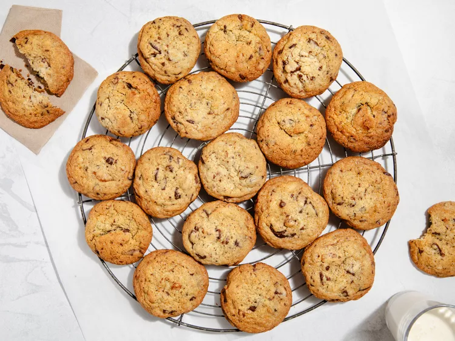

Recipes
Chocolate Chip Cookies

Description
I used to beg my mom to let me make chocolate
chip cookies for two reasons. First, she had
a beautiful blue KitchenAid stand mixer that
I always wanted to use, and second, because
I loved baking. I chose cookies specifically
because I knew she wouldn’t say no to them.
It was really a win-win for both of us. Our
favorite recipe was the one on the back of
the Nestlé Toll House bag of semisweet
chocolate morsels. Little did we know that
the recipe printed there was steeped in
history, a modernized version of the first-ever
chocolate chip cookie recipe.
Ingredients
- 1 cup butter, softened
- 3/4 cup brown sugar
- 3/4 cup white sugar
- 2 large eggs
- 1 tsp vanilla extract
- 2 1/4 cups all-purpose flour
- 1 tsp baking soda
- 1 tsp salt
- 1 cup chopped nuts
- 2 (7-ounce) bars semi-sweet chocolate, chopped
Steps
-
Preheat oven to 375 degrees farenheit and line
two large baking sheets with parchment paper
-
Beat butter, brown sugar, and white sugar together
in a large bowl using a hand mixer on low speed.
Add eggs one at a time, mixing until combined.
Mix in vanilla extract.
-
Sift flour and baking soda over a medium bowl. Stir
in salt. Add to the butter mixture and mix well until
combined. Add nuts and chocolate.
-
Drop rounded tablespoons of dough on the prepared baking sheets.
-
Bake for 10 to 12 minutes, or until golden brown. Cool
slightly before transferring to a wire rack to finish
cooling.
Source
https://www.allrecipes.com/review-of-original-chocolate-chip-cookie-recipe-11684278